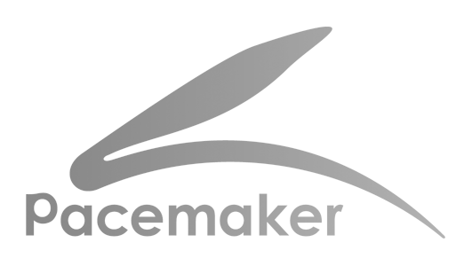
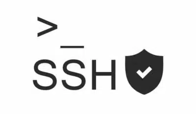
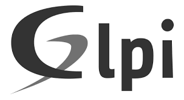
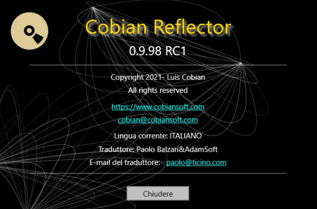
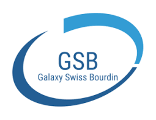
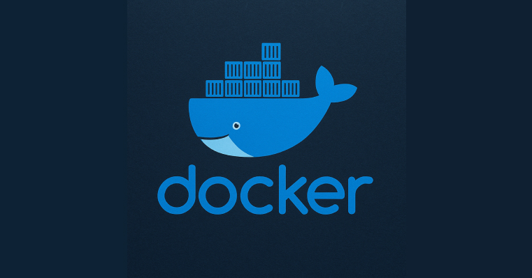
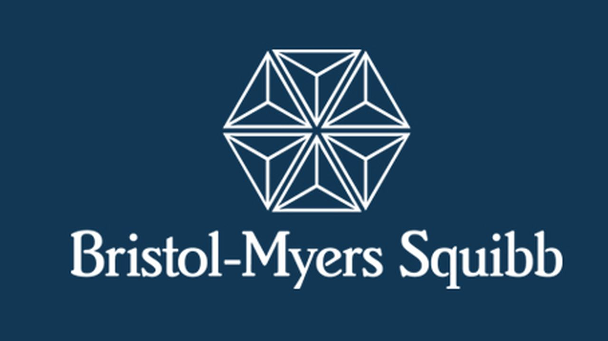

// Mes Projets
Réalisations techniques et études de cas
Solutions NAS avec XPenology
Installation et configuration de solutions NAS avec XPenology (Nanoboot et Redpill) pour créer un serveur de stockage en réseau avec gestion des volumes RAID, services de sauvegarde et hébergement web.

Déploiement Automatisé FOG
Déploiement automatisé de systèmes et logiciels via un serveur FOG sur un réseau local, avec capture et restauration d'images OS.

Cluster Haute Disponibilité
Mise en place d'un cluster haute disponibilité avec Corosync/Pacemaker pour assurer la continuité de service d'un serveur web Apache grâce à un système de failover automatique entre deux nœuds.

SSH avec Échange de Clés
Configuration de connexions SSH sécurisées sans mot de passe entre machines Linux et depuis Windows via échange de clés publiques/privées.

Installation GLPI
Guide complet d'installation de GLPI (Gestionnaire Libre de Parc Informatique) dans un environnement virtualisé sous Debian avec configuration réseau et base de données.
Utilisation Avancée GLPI
Documentation sur l'utilisation opérationnelle de GLPI avec injection de données, gestion complète du cycle de vie des tickets et exercices pratiques simulant des interventions helpdesk.

Sauvegarde Cobian Reflector
Expérimentation des différents types de sauvegarde (complète, incrémentielle, différentielle) avec Cobian Reflector, incluant sauvegardes locales, distantes via SFTP et cloud.
Infrastructure de Clonage
Mise en place d'une infrastructure de clonage utilisant Samba, NFS et SSH avec Clonezilla pour le déploiement et la sauvegarde de systèmes TinyCore Linux sur un réseau privé.
Solutions de Connexion à Distance
Comparaison et mise en œuvre de trois solutions de contrôle à distance (RDP, VNC, clientless) entre machines Linux et Windows.
Sécurisation d'un local technique
Guide complet pour protéger physiquement et numériquement un local technique, incluant serveurs, sauvegardes et plans de continuité.
Sensibilisation Périphériques Malveillants
Atelier de sensibilisation aux attaques par périphériques USB malveillants utilisant un câble O.MG pour démontrer le vol de données et expliquer les mesures de protection.
Étude des Processeurs
Analyse comparative des processeurs pour appareils mobiles, IoT et embarqués, incluant leurs concepteurs, technologies et différences avec les processeurs de PC/serveurs.
Gestion des Paquets Linux
Installation et exploration approfondie de paquets Linux sous Debian Buster, incluant la gestion des paquets et l'utilisation avancée des options de commande.
Analyse Performances PC
Étude comparative des performances et de la stabilité d'une configuration PC à l'aide d'outils de diagnostic et de benchmark (CPU-Z, Intel Processor Diagnostic Tool, AIDA64).
Sécurisation des Échanges
Mise en œuvre de méthodes de chiffrement asymétrique, de signature numérique et d'approche hybride PGP pour assurer confidentialité et authentification des échanges.
Montage Réseau Multi-niveaux
Infrastructure complète avec switch L3, routeur et borne Wi-Fi. Mise en place de routage inter-VLAN, NAT et sécurisation par ACL.
Déploiement WordPress & Estatik
Mise en place d'une solution CMS pour l'agence immobilière IDÉAL. Installation de l'environnement WordPress et configuration du framework Estatik pour la gestion dynamique de catalogue de biens.
Utilisation de WordPress
Rédaction d'une documentation fonctionnelle destinée aux agents immobiliers. Ce guide détaille l'administration du catalogue de biens, la gestion des annonces et l'utilisation quotidienne du back-office WordPress/Estatik.

Solution informatique pour GSB
Étude comparative et mise en place d'un parc informatique sécurisé. Ce projet inclut le choix du matériel nomade, les préconisations de sécurité et les procédures de remise aux utilisateurs.

Infrastructure Docker
Mise en œuvre d'une infrastructure conteneurisée. Déploiement de stacks via Docker Compose (Portainer, Nextcloud, Jellyfin) et interconnexion avec un annuaire OpenLDAP pour la gestion centralisée des utilisateurs.

Projet Bristol-Myers Squibb (BMS)
Déploiement complet d'un parc SI sécurisé: installation de serveurs de domaine et de fichiers, configuration avancée de pfSense (filtrage/DMZ), gestion d'Active Directory (GPO, droits) et supervision avec Nagios.